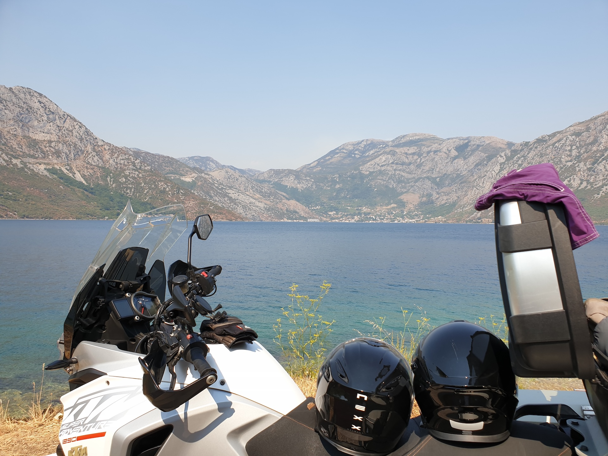
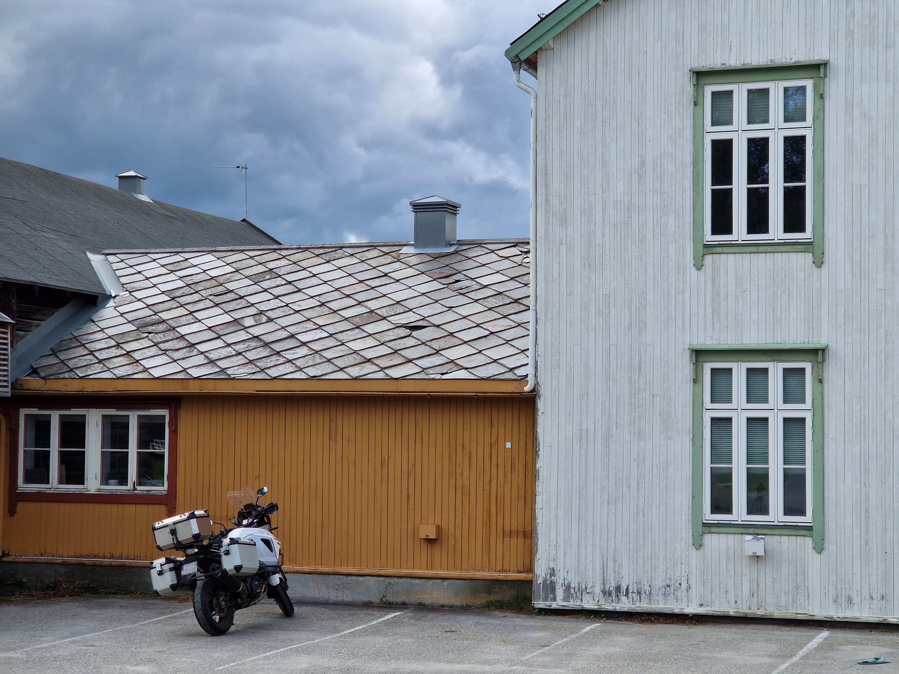
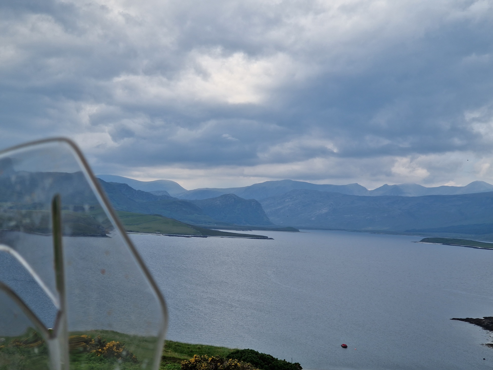
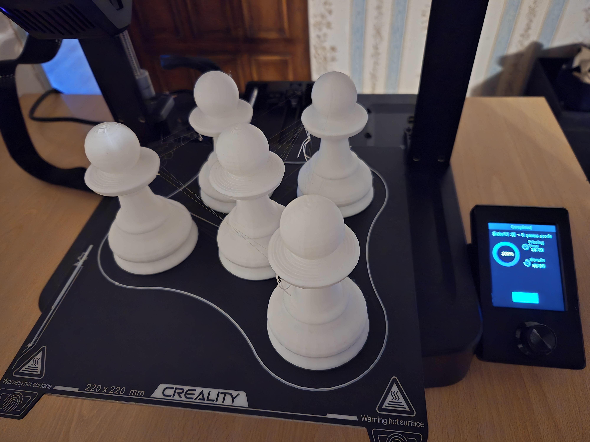
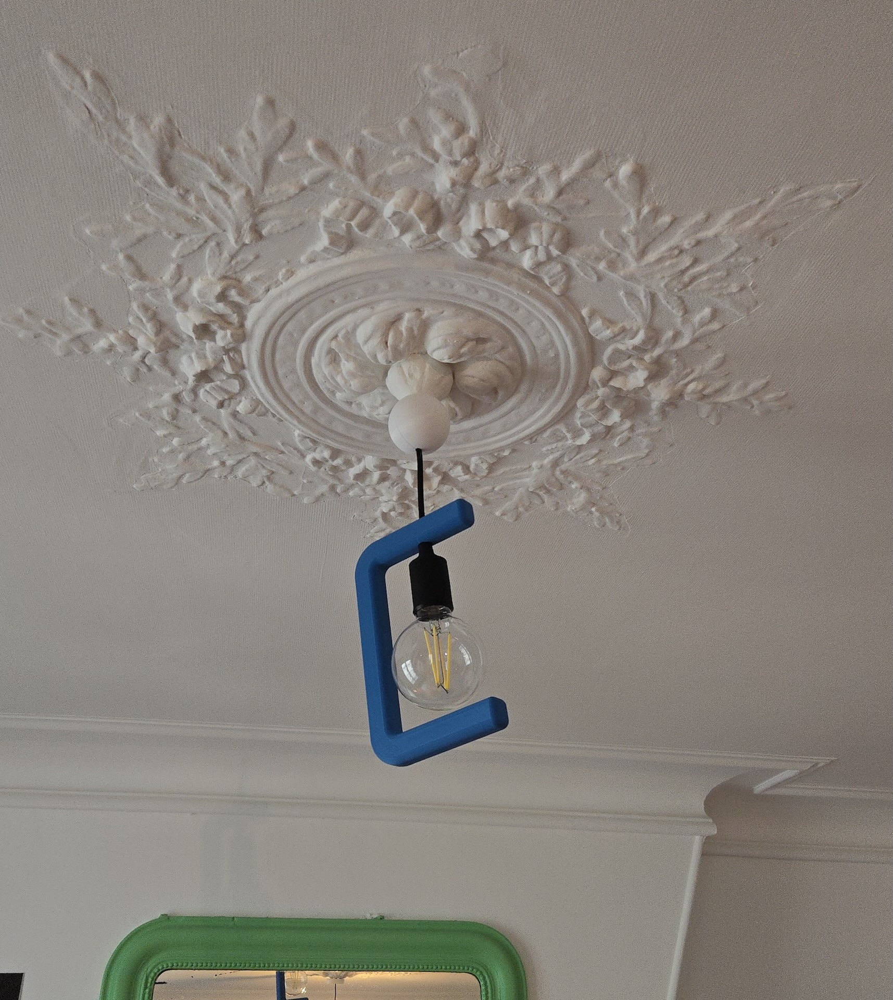
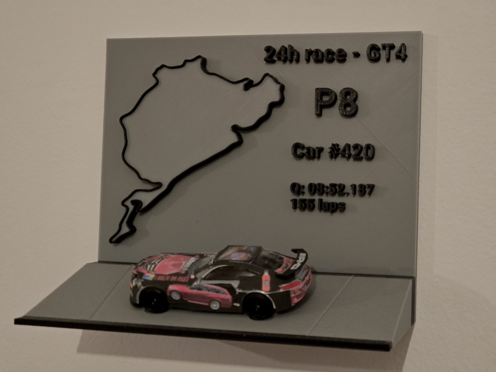
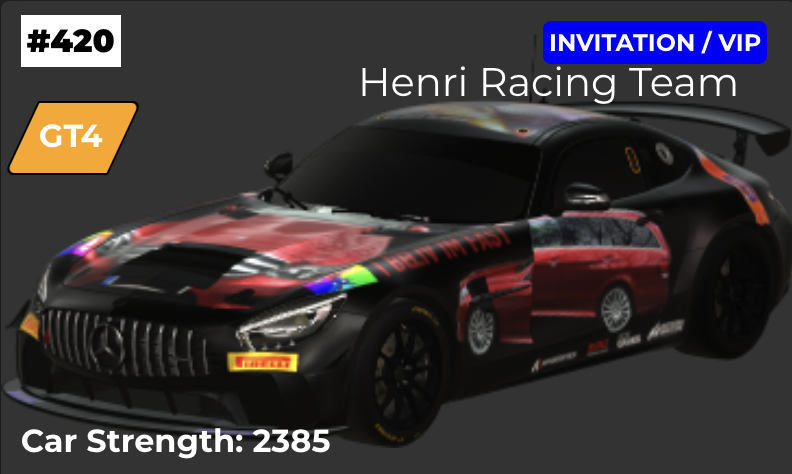
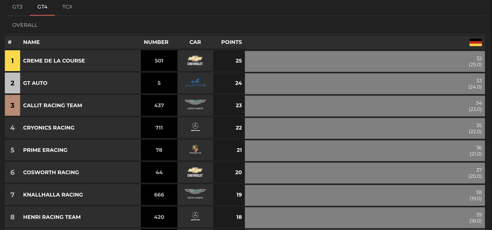

Motorcycle roadtrips
Thousands of kilometers across Europe and Tasmania on two wheels. I find it's a great way to enjoy the trip differently. You can change plans easily, they are usually made on a daily basis. One left-turn can lead to a different journey with less traffic, people who are open to meet and chat. Being constantly outside also means that you feel the air as well as the heavy rains (sometimes), you are part of the landscapes you traverse.
- European routes: Alps, North of Spain, Balkans, Scotland, Norway, Tasmania
- 2 people, one bike, 2-3 weeks per trip
- Touring bikes: KTM 1290 Super Adventure, previously a Kawasaki Versys 1000
- More than 50,000 kilometers traveled on duo trips



3D printing and CAD modeling
I use CAD and 3D printing for practical projects, prototypes, and small household fixes. Recent prints include multiple self-designed lampshades, custom chess pieces for the electronic chessboard project, and wedding accessories.



- Tools: Onshape, Bambu Studio, OrcaSlicer. Printers: Bambulab A1, Creality Ender 3 V3 SE
- Designing parts in CAD, with some prototypes validated before going full scale.
- Creating custom mounts and holders for electronics projects, iterating quickly to spot design constraints early at low cost.
- Designed and printed lampshades, simracing accessories, wedding accessories & gifts, and other home fixtures.
- Printed a full set of chess pieces for a big chessboard, 2m x 2m.
Simracing
Endurance racing with friends and family. Fighting for tenth over and over, and learning how to properly operate various cars, their strengths and weaknesses, and track specifics. As they say "slow is smooth, smooth is fast".
Doing endurance racing puts you in an interesting mental state, replacing one-time immediate performance with balance and consistency. Usually, getting better overtime and building long term skills and performance.


- Competing in multiple GT3 endurance races, from 3-hour to 6-hour events.
- Qualified in a 2-week selection for a 90-team event: a full 24-hour Nürburgring endurance race. We finished P8 (over 25 teams qualified in our category)
- Main game: Assetto Corsa Competizione, others: Assetto Corsa, Le Mans Ultimate, Project Cars 2, Richard Burns Rally, and Assetto Corsa Rally
- Maintained consistency in the top 5-10% of a 280k+ registered community as of January 2026
- Race setups, tire and fuel strategies, and in-race communication tactics